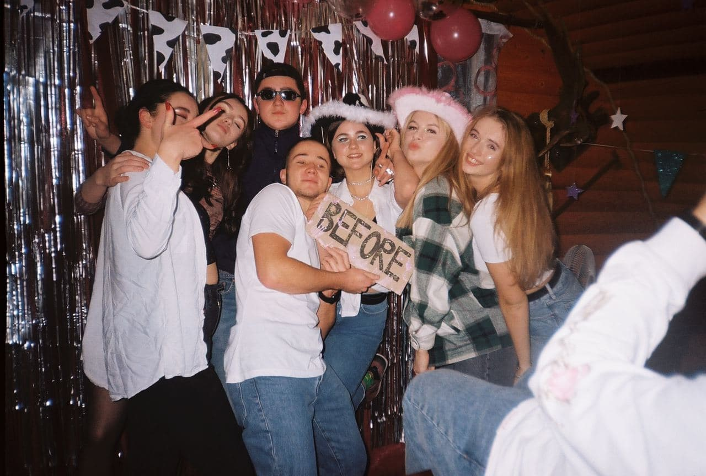
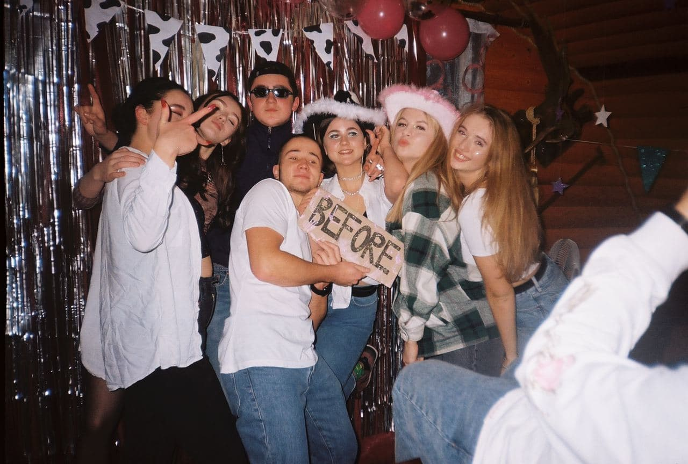
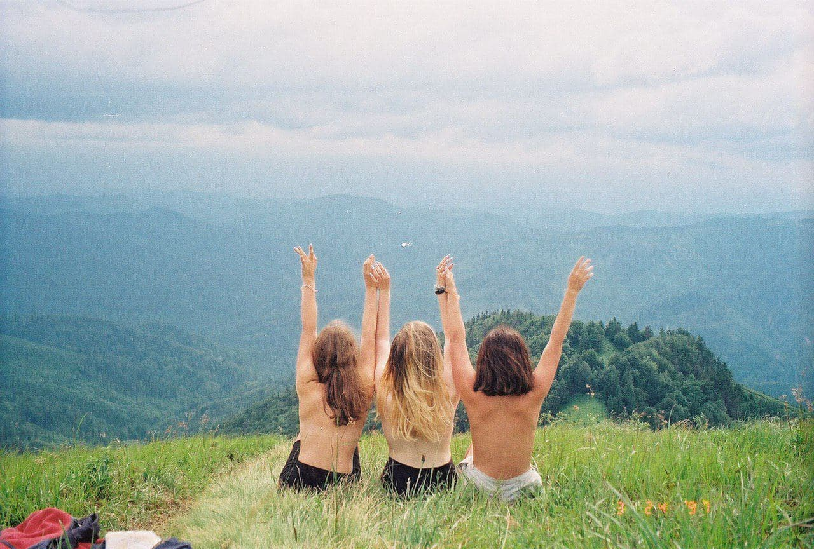
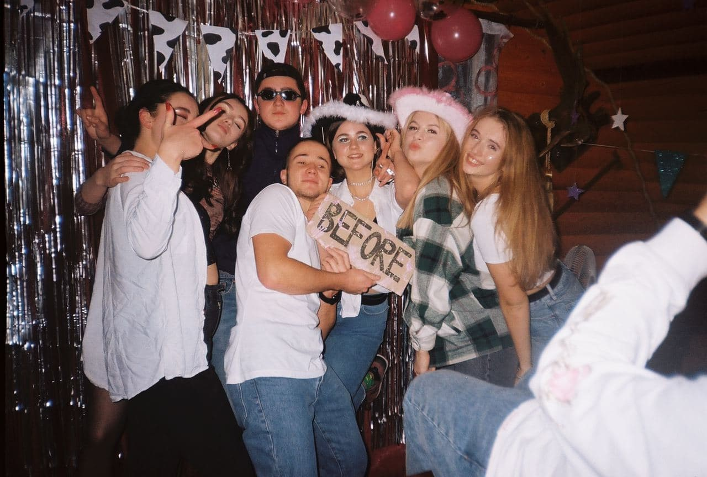

З дитинства я була непостійною людиною.
Мої захоплення постійно змінювалися: від малювання до танців і спорту.
За своє життя я встигла сходити на малювання, декілька різних видів танців,
співи, волейбол, футбол, баскетбол, біг на довгі дистанції(cross country), фотографування.
Але є 2 речі, якими я дуже захоплююся останнім часом.
Це фотографування на плівковий фотоапарат та походи в гори.

